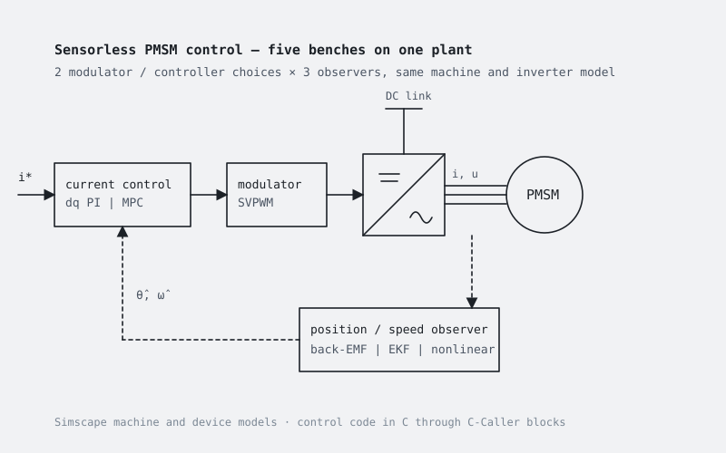

Sensorless PMSM control
Five benches on the same plant to compare modulator and observer choices: space-vector PWM with dq PI or model-predictive current control, and back-EMF observer, extended Kalman filter or nonlinear observer for rotor position and speed.

What it is
Sensorless control of a permanent-magnet synchronous machine removes the position sensor and reconstructs rotor angle and speed from the electrical quantities. Which observer to use, and whether to pair it with a linear dq current controller or with a predictive one, is a design choice that is hard to make on paper. These benches put the alternatives on the same plant so that they can be compared on the same transients.
The plant is a Simscape machine model driven by an inverter with device models, so the comparison includes the effect of PWM, dead time and losses rather than of an ideal voltage source.
The five benches
- Inverter side: space-vector PWM with dq PI current control, or model-predictive current control.
- Observer side: back-EMF observer, extended Kalman filter, or nonlinear observer for rotor position and speed.
- Each subfolder is a complete bench with its own
init_model.m, plotting, loss and spectrum scripts. Induction-machine studies are planned on the same structure.